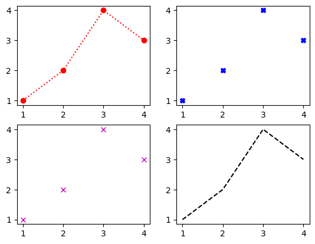
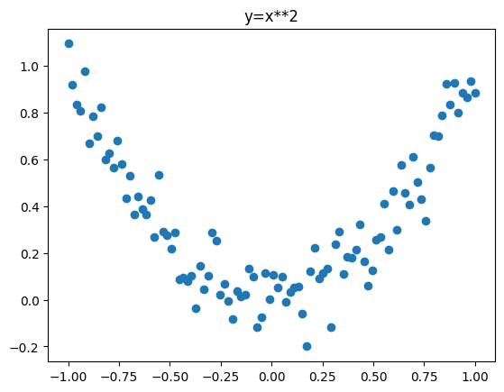
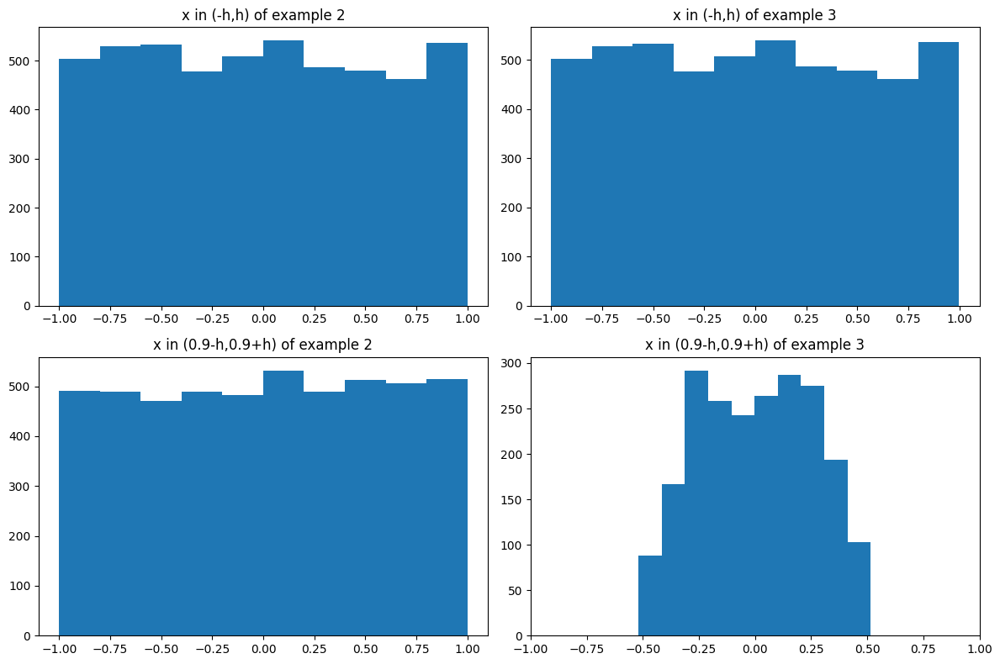
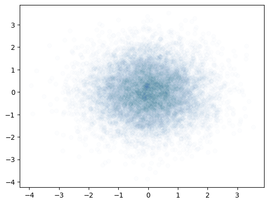
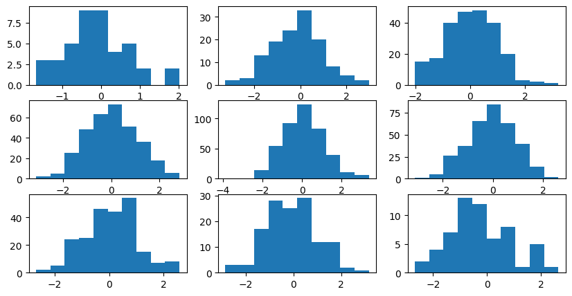
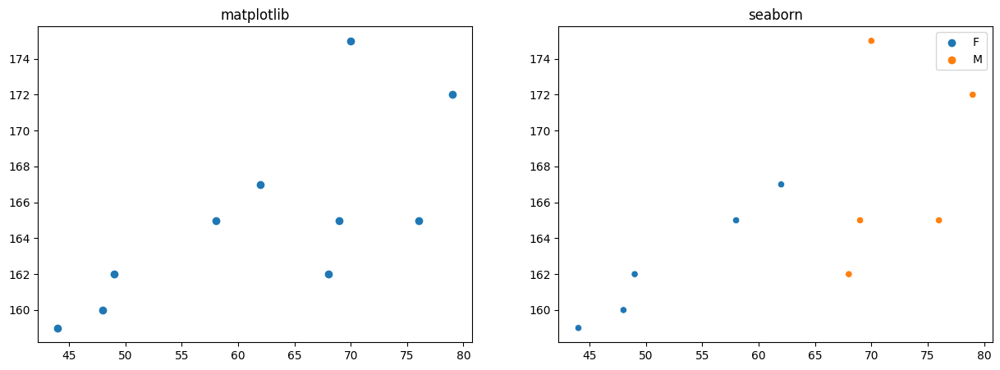
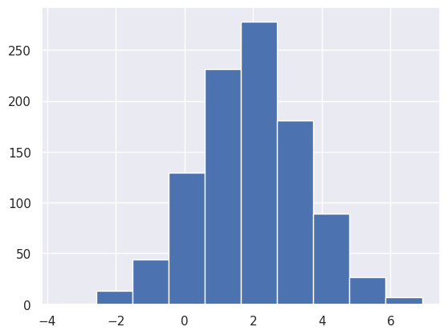
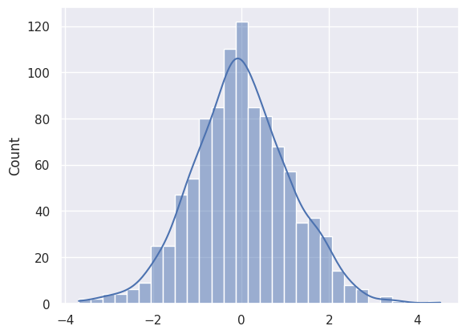
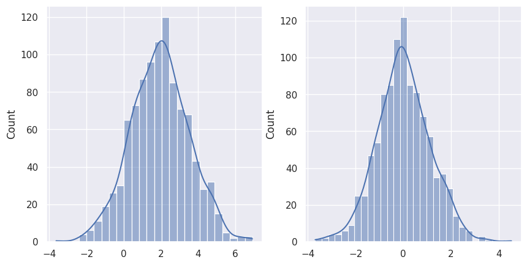
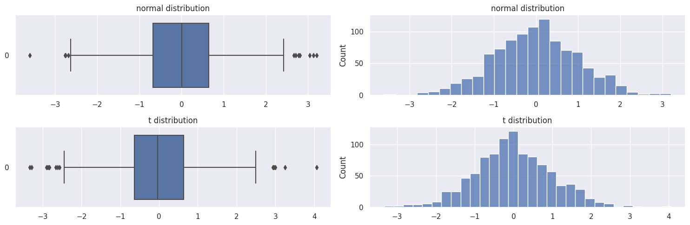

그래프를 그리는 여러가지 방법
예제 1 : axis를 이용한 플랏
- 구조 : axis \(\subset\) axes \(\subset\) figure
- 목표 : plt.plot()을 사용하지 않고 아래 그림을 그려보자.
- 전략 : 그림을 만들고 (도화지를 준비) \(\to\) axis를 만들고(네모틀을 만든다.) \(\to\) axis에 그림을 그린다.
예제 2. axis를 이용한 서브플랏 (방법 1)
- 첫 번째 axis에 그림추가
예제 2. axis를 이용한 서브플랏 (방법 1)

예제 4 : axis를 이용하여 2x2 서브플랏 그리기
예제 5 : plt.subplots()를 이용하여 2x2 서프플랏 그리기
예제 6 : axis를 각각의 변수명으로 저장

예제 7 : fig.axes
fig,_ = plt.subplots(2,2)
ax1,ax2,ax3,ax4= fig.axes
ax1.plot(x,y,"o:r")
ax2.plot(x,y,"Xb")
ax3.plot(x,y,"xm")
ax4.plot(x,y,"--k")
- 나한테 편한 방법을 선택해서 그리면 될 것 같당.
제목 설정
예제 1 : plt.plot()
예제 2 : axis를 이용
예제 3. subplot에서 각각의 제목설정
예제 4 : axis의 제목 + figure
축 범위 설정(matplotlib)
예제 1 : plt.plot
예제 2: subplotsb
통계예제 : 여러가지 경우의 점도와 표본 상관계수
예제 1
import numpy as np
np.random.seed(202150256)
x1 = np.linspace(-1,1,100,endpoint=True)
y1 = x1**2 + np.random.normal(scale=0.1,size=100)
plt.plot(x1,y1,"o")
plt.title("y=x**2")Text(0.5, 1.0, 'y=x**2')
- (표본) 상관계수의 값이 0에 가까운 것은 두 변수의 직선관계가 약한 것을 의미한 것이지 두 변수 사이에 아무런 함수관계가 없다는 것을 의미하는 것이 아니다.
예졔 2
예제 3
예제 2,3으로 알아보는 두 변수의 독립성
다음과 같은 경우를 고려하여 보자
1. $ X $ 일 경우 \(Y\) 의 분포를 생각해보자. 그리고 히스토그램을 그려보자.
2. \(X \in [0.9-h, 0.9 + h]\)일 경우 \(Y\)의 분포를 생각해보자. 그리고 히스토그램을 그려보자.
3. 1 - 2를 비교해보자.
fig, axs = plt.subplots(2,2, figsize=(12,8))
(ax1,ax2),(ax3,ax4) = axs
ax1.hist(y2[(x2>-h) * (x2<h)])
ax1.set_title("x in (-h,h) of example 2")
ax2.hist(y3[(x3>-h) * (x3<h)])
ax2.set_title("x in (-h,h) of example 3")
ax3.hist(y2[(x2>0.9-h) * (x2<0.9+h)])
ax3.set_title("x in (0.9-h,0.9+h) of example 2")
ax4.hist(y3[(x3>0.9-h) * (x3<0.9+h)])
ax4.set_title("x in (0.9-h,0.9+h) of example 3")
ax4.set_xlim(-1,1)
fig.tight_layout()
- 예제 3같은 경우 \(x\)의 범위에 따라 \(y\)에 분포가 달라짐을 볼 수 있는데 이는 독립이 아니라는 것을 뜻한다.
- 위 처럼 상관계수가 낮은 값을 갖더라도 \(x\)의 범위에 따라 \(y\)값이 변하므로 독립이 아니라고 판단할 수 있다.
예제 4 : 또 다른 예제
np.random.seed(202150256)
x4 = np.random.normal(size=10000)
y4 = np.random.normal(size=10000)
plt.scatter(x4,y4,alpha=0.01)<matplotlib.collections.PathCollection at 0x7fd1279e44c0>
상관계수만 보았을 때는 \(x,y\) 관계가 아무런 독립 즉, 아무런 연관이 없는 것 같다.
전 예제처럼 x 값의 범위를 변경해주며 확인하여 보자
::: {.cell 0=‘c’ 1=‘o’ 2=‘d’ 3=‘e’ 4=‘-’ 5=‘f’ 6=‘o’ 7=‘l’ 8=‘d’ 9=’ ’ 10=‘:’ 11=‘t’ 12=‘r’ 13=‘u’ 14=‘e’ executionInfo=‘{“elapsed”:2172,“status”:“ok”,“timestamp”:1681959577833,“user”:{“displayName”:“이강철”,“userId”:“13507850890638580947”},“user_tz”:-540}’ outputId=‘68ef56b0-eab1-4d70-e031-e491744064c5’ execution_count=61}
fig,axes = plt.subplots(3,3 , figsize=(10,5))
for i in range(9) :
fig.axes[i].hist(y4[ (x4>k[i]-h) * (x4< k[i]+h)])
:::
- 히스토그램을 살펴본 결과 밀도는 좀 다를 수 있나 분포의 모양이 전부 종모양으로 독립이라고 판단할 수 있다.
matplotlib + seaborn
- 두 그림을 나란히 겹처 그리는 방법
fig, axes = plt.subplots(1,2, figsize= (15,5))
(ax1,ax2) = axes
ax1.set_title("matplotlib")
ax2.set_title("seaborn")
ax1.plot(x,y,"o")
#sns.scatterplot(x,y,hue=g,ax=ax2) 이렇게 하면 안그려짐
sns.scatterplot(x=x,y=y,hue=g,ax=ax2)<Axes: title={'center': 'seaborn'}>
matplotlib vs seaborn
- 디자인이 예쁜 패키지를 선택하여 하나만 공부하는 것은 그렇게 좋은 전략이 아니다.
- 아래와 같이 seaborn 테마를 입혀 matplotlib에 적용할 수 도 있다.
예제 : 정규분포 체크
(array([ 1., 13., 44., 129., 231., 278., 181., 89., 27., 7.]),
array([-3.62829921, -2.57400059, -1.51970198, -0.46540336, 0.58889525,
1.64319387, 2.69749249, 3.7517911 , 4.80608972, 5.86038834,
6.91468695]),
<BarContainer object of 10 artists>)
- 기존에 내가배웠던 것 : 종모양이니 정규분포인 듯 하다.
- + 밀도추정곡선을 그려 정규성을 추정해보자. \(\to\) seaborn을 활용
- 그렇다면 아래와 같은 경우는 어떤가? \(\to\) t분포의 경우
np.random.seed(202150256)
from scipy import stats
y = stats.t.rvs(10,size=1000) ## 자유도가 10이고 size가 1000인 t분포를 생성
sns.histplot(y,kde=True)<Axes: ylabel='Count'>
- 생성한 y도 종모양이다.
- 비교 : 둘다 비슷한 것 같으면서도 scale이 조큼 다르다.
Code
<Axes: ylabel='Count'>
- 표준화 수행
Code
<Axes: ylabel='Count'>- boxplot과 함께 비교
fig, axes = plt.subplots(2,2, figsize=(15,5))
(ax1,ax2),(ax3,ax4) = axes
ax1.set_title("normal distribution")
ax2.set_title("normal distribution")
ax3.set_title("t distribution")
ax4.set_title("t distribution")
sns.boxplot(xx,ax=ax1,orient="h")
sns.histplot(xx,ax=ax2)
sns.boxplot(yy,ax=ax3,orient="h")
sns.histplot(yy,ax=ax4)
fig.tight_layout()
- 정규분포와 다르게 t분포는 이상치라고 판단되는점이 더 많다.
- 난 아직도 이걸보고 정규성? 이라는 것을 판단하기 버거워 - > 종모양을 보고 \(y\)는 정규분포야 라고 정확히 판단하는 건 오류가 있는 것 같에
- 관찰 : boxplot을 그려보니 \(y\)의 꼬리가 정규분포보다두꺼워 보인다.
- 즉 단순히 histogram 만 보고 데이터가 정규성이라고 판단하는 것은 오류의 가능성이 있다…
- qqplot을 배울거니 걱정하지 말자.